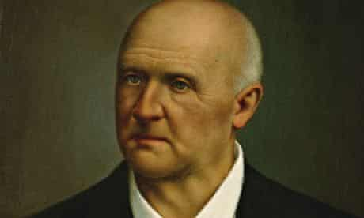
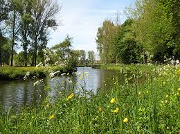
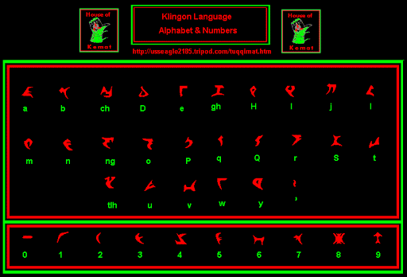

The crazy adventures of
Gunther Lippens

Anton Bruckner, my favorite composer

The Dender river, where I grew up
I like being on stage
I have a background in physics

One of the languages I love
My last job was with the NGO Vredesactie